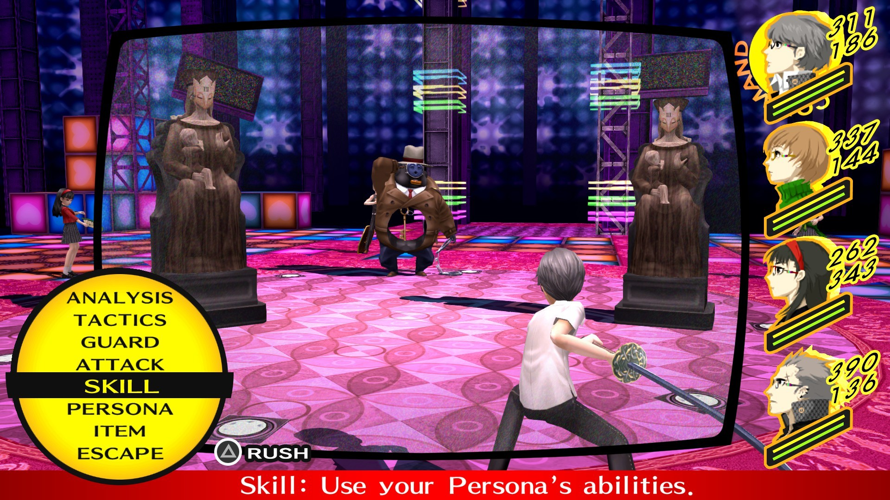
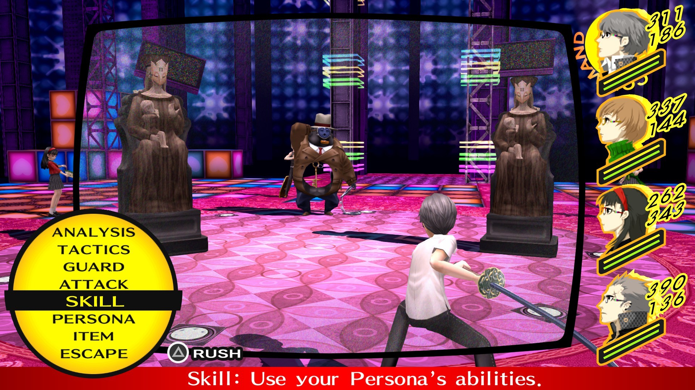

Atlus
Contacto

Persona 4 es el quinto juego principal de la saga y el segundo de la "era moderna". El juego salió originalmente para la PS2, y poco después recibiría una versión extendida para PSVITA. La revisión del juego también recibió en 2020 un port a Steam, y más tarde en 2022 un port al resto de plataformas. El juego recibió 2 adaptaciones a anime, una por cada versión del juego, un manga y varios Spin-Offs que continúan y expanden la historia original.
El juego sigue a un grupo de estudiantes en una pequeña ciudad de Japón llamada Inaba, donde investigan una serie de asesinatos misteriosos y descubren un mundo oculto detrás de la televisión. Con la ayuda de sus Personas, forman un grupo de investigación para navegar por este mundo alternativo y para resolver los misterios detrás de los asesinatos y atrapar a los culpables. El juego toca temas como la verdad, la justicia y la amistad, mientras presenta una trama intensa y llena de giros y revelaciones.

Arcana(s): The Fool, Judgement, The World
Persona(s): Izanagi, Izanagi-no-Okami, Wild Card
El protagonista es un estudiante de intercambio que se matricula
en el instituto Yasogami para estudiar durante un año mientras
vive con su tío. Es una persona amigable, pero muy distante. Tiene
una vista pesimista sobre la vida al tener que estar mudándose
constantemente por el trabajo de sus padres.
Arcana: Star
Persona inicial: Kintoki-Douji
Personas definitivas: Kamui, Kamui-Moshir
Teddie es una criatura que se parece a un oso de peluche que
reside dentro del mundo de la televisión. Suele hablar haciendo
juego de palabras con la palabra "oso".
Arcana: Magician
Persona inicial: Jiraiya
Personas definitivas: Susano-o, Takehaya Susano-o
Yosuke es un chico que siempre va caminando con un reproductor de
muisca y sus cascos en su cuello. Es una persona bastante torpe,
pero también es de los más habladores del grupo de investigación,
y es el que suele crear más teorías sobre los asesinatos y las
evidencias.
Arcana: Chariot
Persona inicial: Tomoe
Personas definitivas: Suzuka Gongen, Haraedo-no-Okami
Chie es una chica energética que tiene una gran pasión por las
películas de artes marciales como las de kung-fu. Tiene una
personalidad muy alegre y siempre hace chistes sobre los casos
para alegrar al grupo.
Arcana: Priestess
Persona inicial: Konohana Sakuya
Personas definitivas: Amaterasu, Sumeo-Okami
Yukiko es una compañera de clase del protagonista, y es la hija de
una familia que es dueña de las aguas termales del pueblo. Es una
chica elegante e introvertida y siempre está ocupada preparándose
para el día que le toque heredar el negocio familiar.

Arcana: Emperor
Persona inicial: Take-Mikazuchi
Personas definitivas: Rokuten Maou, Takeji Zaiten
Kanji es un estudiante de primer año en Yasogami, y un delincuente
bastante notorio. Tiene una reputación de ser un abusón, y también
es el centro de muchos rumores sobre un enfrentamiento con una
banda de moteros local. Su madre es dueña de una tienda de
textiles, en la cual la familia Amagi son clientes habituales. Por
esa razón es muy hábil tejiendo y siempre ha estado interesado en
tejer desde que era niño, pero se burlaban de sus intereses.

Arcana: Fortune
Persona inicial: Sukuna-Hikona
Personas definitivas: Yamato-Takeru, Yamato Sumeragi
Naoto viene de una familia de detectives muy famosa de la cual es
la quinta generación. Naoto visita Inaba para ayudar con los casos
de los asesinatos, y por eso también empieza a estudiar en
Yasogami. Es una persona formal y seria.

Arcana: Lovers
Persona inicial: Himiko
Personas definitivas: Kanzeon, Kouzeon
Rise es una idol popular que vuelve a Inaba para poder estar en
hiatus y tomarse un descanso teniendo una vida normal. Rise creció
en Inaba y su abuela es dueña de una tienda de tofu en el distrito
comercial, es la cual Rise ayuda.

Versión original del juego, lanzado solo en PS2.
Versión mejorada y extendida de la versión original de PS2. Incluye mejoras en el gameplay y más historia. En 2020 fue porteado a PC y en 2022 al resto de las plataformas, añadiendo soporte a muchos idiomas como el Español.


Spin-Off de lucha en 2D desarrolado por los creadores de Guilty Gear y BlazBlue, Arc System Works. Contina con la historia de Persona 4.
Secuela del P4A original, con mas personajes y mas contenido.
Juego de ritmo lanzado originalmente en la PSVITA. Tiene una version de PS4 pero no se puede comprar sola, viene solo con un paquete de los juegos de ritmo del Persona 3 y 5.


RPG para la Nintendo 3DS que junta los personajes de Persona 3 y Persona 4. Es un juego con gameplay muy similar a Etrian Oddyssey, otra saga publicadada por ATLUS.
Secuela del Persona Q original, que esta vez incluye a los personajes de Persona 5. Fue uno de los ultimos juegos que se publicaron para la 3DS

 
